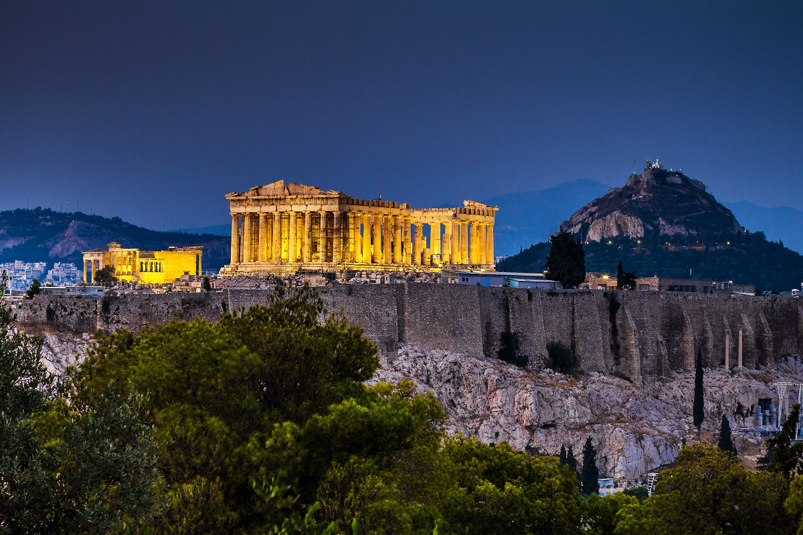
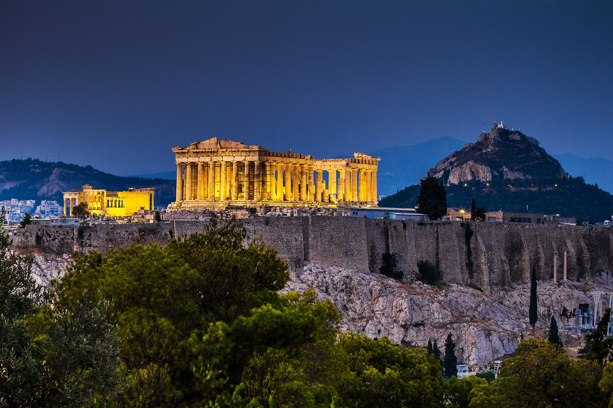

Itinerary
- Day 1: 14th June 2019, Friday:
Arrive into Mykonos - 1710
Dinner at Remezzo
- Day 2: 15th June, 2019, Saturday - Mykonos
Explore the main town: Little Venice
Lunch at Interni
Evening (Sunset) 5pm to 11pm - Scorpios - Valeron & Band live
- Day 3: 16th June, 2019, Sunday - Mykonos
Beaches (Platis Gialos Beach) - Watersports, etc.
ATV - Action Mykonos Car Rental
Afternoon - Nammos
- Day 4: 17th June, 2019, Monday: Mykonos – Santorini (Ferry)
Departure Mykonos – 1245 – Golden Star Ferries, Superferry 2
Arrive Santorini – 1530
- Day 5: 18th June 2019, Tuesday - Santorini
Scuba (Aegean Divers) - 9:00-
Oia Village - 21min drive north from villa
Santo Winery - Sunset and Restaurant - 12min drive south from villa
- Day 6: 19th June 2019, Wednesday: Santorini
Santorini Volcano Hike and Hot Springs Boat Tour - 11am - 2pm
https://www.santorini-view.com/boat-volcano-tours/volcano-hot-springs-tour-caldera-boats/
- Day 7: 20th June, Thursday: Santorini – Athens OA 359
Ancient Akrotiri Ruins - 24min drive south from villa
Departure Santorini – 1835
Arrival Athens – 1920
- Day 8: 21st June, Friday:
- Day 9: 22nd June, Saturday:
- Day 10: 23rd June, Sunday:
Departure Athens- 1450 EY90
Arrival Mumbai – 0245 EY206

 

Go back to Main Page